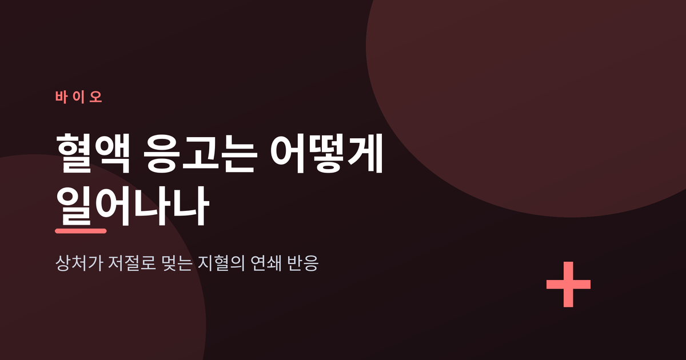
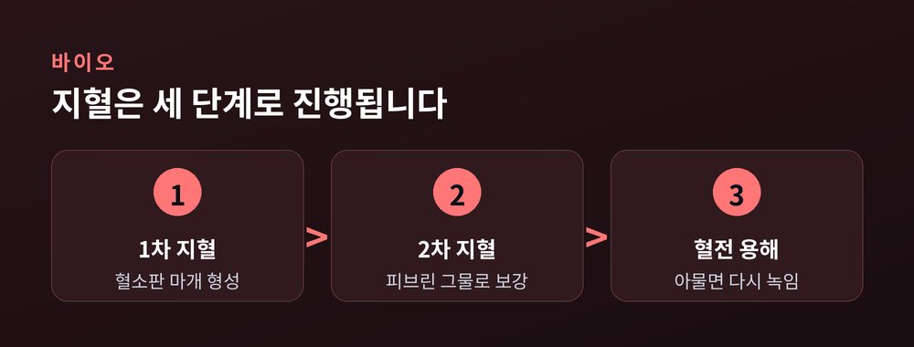
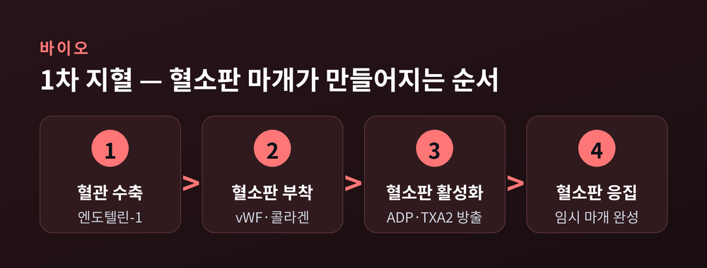
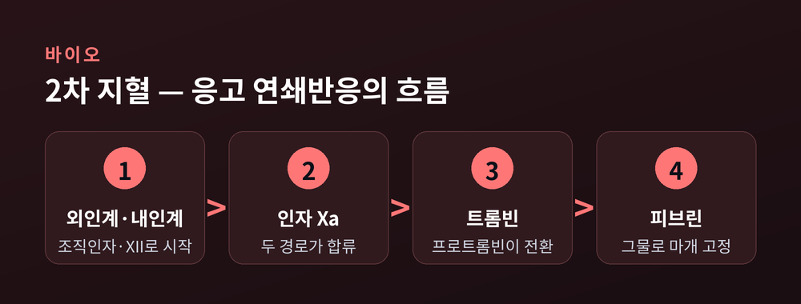
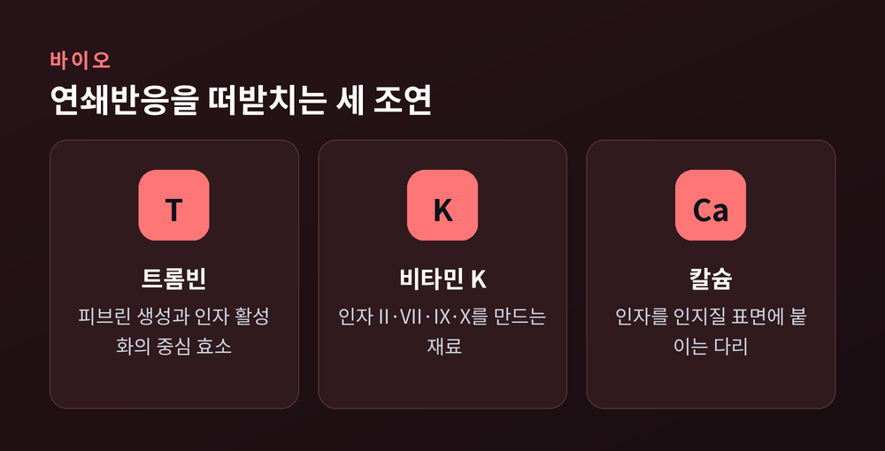
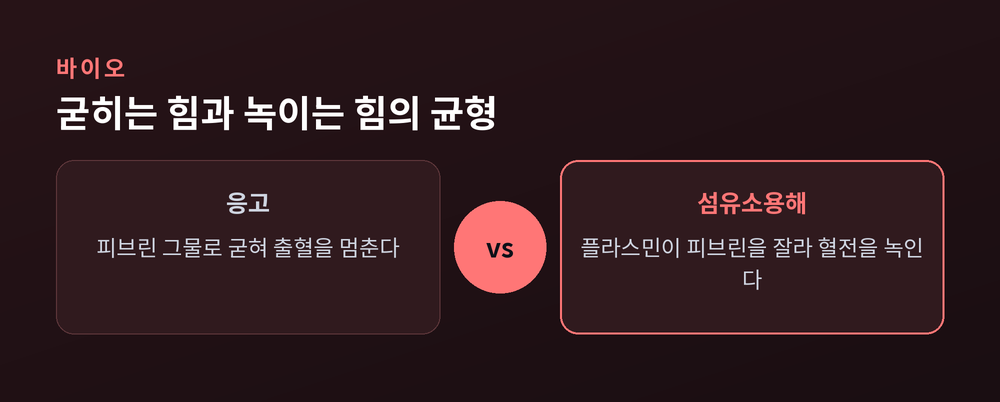

손끝을 살짝 베여도 피는 몇 분 안에 멎습니다. 이번 글에서는 그 짧은 사이에 몸속에서 벌어지는 일, 즉 혈액 응고(지혈, hemostasis)의 원리를 순서대로 정리해 보겠습니다. 혈관 수축부터 피브린 그물, 그리고 혈전을 다시 녹이는 균형까지 한 번에 살펴봅니다.

지혈(hemostasis)이라는 말은 '피(hem)'와 '멈춤(stasis)'이 합쳐진 단어입니다. 말 그대로 출혈을 멈추는 과정 전체를 가리킵니다.
이 과정은 한 덩어리가 아닙니다. 세 개의 층으로 나뉩니다.
먼저 1차 지혈이 손상 부위에 임시로 혈소판 마개를 만듭니다. 이 마개는 아직 약합니다. 그래서 2차 지혈, 즉 응고 인자들의 연쇄반응이 그 위에 피브린 그물을 덧대어 단단하게 굳힙니다.
여기서 끝이 아닙니다. 상처가 아물면 굳었던 덩어리를 다시 녹이는 혈전 용해(섬유소용해)가 뒤따릅니다.
굳히는 힘과 녹이는 힘. 이 둘의 균형이 지혈의 본질입니다. 균형이 굳는 쪽으로 기울면 혈전증이, 반대로 기울면 출혈성 질환이 됩니다.

혈관이 찢어지면 몸은 곧바로 네 가지 동작을 순서대로 밟습니다.
첫째, 혈관 수축입니다. 손상된 내피세포가 엔도텔린-1이라는 강력한 수축 물질을 내보냅니다. 혈관 지름이 줄어드니 새어 나가는 피의 양부터 줄어듭니다.
둘째, 혈소판 부착입니다. 혈관이 찢기면 그 아래 숨어 있던 콜라겐이 드러납니다. 혈소판은 폰빌레브란트 인자(vWF)라는 다리를 통해 이 콜라겐에 달라붙습니다. vWF는 100개가 넘는 분자가 이어진 긴 사슬을 이뤄, 빠르게 흐르는 피 속에서도 혈소판을 손상 부위에 붙잡아 둡니다.
셋째, 혈소판 활성화입니다. 붙은 혈소판은 부풀고 위족을 뻗으며 끈끈해집니다. 동시에 과립을 터뜨려 ADP와 트롬복산 A2를 뿜어냅니다. 이 물질들이 주변 혈소판에게 "여기로 모이라"는 신호가 됩니다.
넷째, 혈소판 응집입니다. 신호를 받은 혈소판들이 몰려와 서로 엉겨 붙습니다. 이렇게 임시 혈소판 마개가 완성됩니다.
다만 이 마개는 아직 불안정합니다. 혈류의 압력을 오래 견디지는 못합니다. 그래서 다음 단계가 필요합니다.

2차 지혈은 흔히 '응고 연쇄반응(coagulation cascade)'이라 부릅니다. 도미노를 떠올리면 이해가 쉽습니다.
혈액 속에는 응고 인자들이 평소 잠든 상태(지모겐)로 떠다닙니다. 그러다 하나가 깨어나면 다음 인자를 깨우고, 그 인자가 또 다음을 깨웁니다. 처음의 작은 신호가 눈덩이처럼 증폭되어 순식간에 피브린을 만들어 냅니다.
이 연쇄반응에는 세 갈래 길이 있습니다.
외인계는 조직인자로 시작합니다. 혈관이 터지면 혈장의 인자 VII이 혈관 밖 조직의 조직인자와 만나 불이 붙습니다. 반응이 빠릅니다. 실제 몸속 응고의 주된 방아쇠로 봅니다.
내인계는 이미 혈액 안에 있는 인자들로 시작합니다. 노출된 표면이 인자 XII를 깨우고, XI과 IX가 차례로 이어집니다. 외인계보다 느리지만 응고를 증폭하고 오래 유지합니다.
두 길은 결국 한곳에서 만납니다. 바로 공통경로입니다.
공통경로의 마지막 장면은 이렇습니다. 인자 Xa가 인자 Va, 인지질, 칼슘과 손을 잡고 프로트롬빈을 트롬빈으로 바꿉니다. 그리고 트롬빈이 피브리노겐을 피브린 가닥으로 바꿉니다. 이 피브린 가닥이 혈소판 마개를 그물처럼 감싸 단단히 고정합니다. 트롬빈은 인자 XIII까지 깨워 피브린 가닥끼리 교차결합시켜 그물을 더 튼튼하게 만듭니다.

연쇄반응의 주인공은 여럿이지만, 무대 뒤의 조연들이 없으면 극은 진행되지 않습니다.
트롬빈은 중심 효소입니다. 피브리노겐을 피브린으로 바꾸는 것은 물론, 인자 V·VIII·XIII를 깨우고 혈소판도 다시 자극합니다. 흥미로운 점은 트롬빈이 브레이크 역할도 한다는 것입니다. 내피의 트롬보모듈린과 결합하면 오히려 응고를 억제하는 쪽으로 돌아섭니다.
비타민 K는 재료 공급책입니다. 간에서 응고인자 II, VII, IX, X를 만들 때 반드시 필요합니다. 이 인자들은 감마-카르복실화라는 가공을 거쳐야 비로소 칼슘을 붙잡는 자리를 얻습니다.
칼슘은 그 다리입니다. 인자들이 칼슘을 매개로 인지질 표면에 달라붙어야 반응이 일어납니다. 칼슘이 없으면 연쇄반응은 여러 지점에서 멈춰 섭니다.

만약 굳히는 힘만 있다면 혈관은 이내 막혀 버릴 것입니다. 그래서 몸은 녹이는 장치도 함께 갖췄습니다.
핵심 효소는 플라스민입니다. 평소 플라스미노겐이라는 잠든 형태로 있다가, tPA 같은 활성인자를 만나 깨어납니다. 깨어난 플라스민은 교차결합된 피브린을 잘게 잘라 혈전을 녹입니다.
이때 생기는 조각 중 하나가 D-이량체(D-dimer)입니다. 교차결합 피브린에서만 나오는 산물이라, 몸 어딘가에서 혈전이 생겼다가 녹고 있다는 신호로 병원에서 활용합니다.
균형은 정교합니다. PAI-1은 tPA를 억제하고, 알파2-항플라스민은 플라스민을 붙잡습니다. 게다가 섬유소용해는 피브린이 있어야만 제대로 작동합니다. 굳을 곳이 없으면 녹이는 힘도 스스로 잠잠해지는 셈입니다.
"굳힘과 녹임의 균형" — 지혈을 한 줄로 줄이면 이 말이 남습니다.
여기에 단백질 C·S, 항트롬빈 III 같은 자연 항응고 장치도 늘 함께 돌아갑니다. 예전엔 응고를 '굳는 사건' 하나로 보았다면, 지금은 '굳힘과 녹임이 매 순간 겨루는 균형'으로 이해합니다.

이 정교한 시스템도 완벽하지는 않습니다. 어느 한 부품이 빠지면 곧바로 문제가 드러납니다.
대표적 사례가 혈우병입니다. 응고인자 VIII이 부족하면 혈우병 A, IX가 부족하면 혈우병 B입니다. 둘 다 X염색체 연관 유전이라 주로 남성에게 나타납니다. 혈우병 A는 남성 약 5,000명당 1명꼴입니다. 인자가 하나 빠졌을 뿐인데 관절 안이나 근육으로 피가 새고, 작은 외상에도 출혈이 멎지 않습니다. 치료는 부족한 인자를 보충해 주는 방식이 기본입니다.
반대로, 굳는 힘을 일부러 낮춰야 하는 경우도 있습니다. 혈전이 걱정되는 환자에게 쓰는 항응고제가 그렇습니다. 대표적인 와파린은 비타민 K를 재활용하는 효소(VKORC1)를 막습니다. 그러면 비타민 K 의존성 인자(II, VII, IX, X)가 덜 만들어져 피가 천천히 굳습니다. 헤파린은 항트롬빈 III의 작용을 끌어올려 같은 목적을 이룹니다.
원리를 알면 약의 작동 방식도 자연스럽게 읽힙니다. 이상과 응용은 결국 정상 지혈의 뒷면입니다.
끝으로 한 마디만 더 드리겠습니다.
작은 상처가 저절로 멎는 그 몇 분은, 사실 수많은 인자가 순서대로 손을 맞잡는 정교한 합주입니다.
다음에 손끝을 베였을 때, 그 자리에서 조용히 벌어지는 연쇄 반응을 한 번쯤 떠올려 보신다면, 우리 몸이 얼마나 촘촘하게 설계되어 있는지 새삼 느끼시게 될 것입니다.